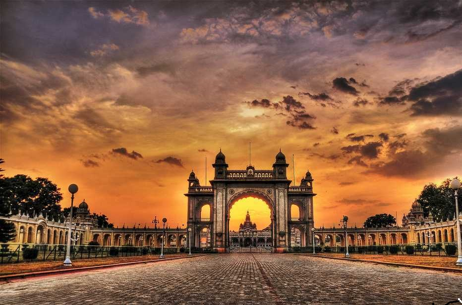

The land of Varanasi (Kashi) has been the ultimate pilgrimage spot for ages.People believe that one who is graced to die on the land of Varanasi would attain salvation and freedom from the cycle of birth and re-birth. Abode of Lord Shiva and Parvati, the origins of Varanasi are yet unknown.
Temples of Prayagraj. Prayag has been known as the greatest pilgrimage since the Rig-Veda era. The basic reason is the confluence of two holiest rivers in India – the Ganga and the Yamuna. It is said one who dies at the Sangam is freed from the cycle of re-birth and attains salvation.
Mathura (or Brajbhoomi) is famous as the birthplace of Lord Krishna, an important deity in the Hindu religious pantheon. It is an important pilgrim place of the Hindus and one of the seven sacred cities in India. The main pilgrim center in Mathura is the Shri Krishna Janmabhoomi temple.
Gaya is the location at which Rama, with Sita and Lakshmana, offered pind-daan for his father, Dasharatha. Gaya has since remained a site of key importance for the performance of the pind-daan ritual. Gaya is considered to be one of the most ideal places to perform the Śrāddha.
Our Tranding packages
Mysore The City of Palaces

"Home to the Mysore Maharajas"
Mysore Tourism
Famously known as The City of Palaces, it wouldn’t be wrong to say that Mysore, currently Mysuru, is one of the most important places in the country regarding ancient reigns. It is replete with the history of its dazzling royal heritage, intricate architecture, its famed silk sarees, yoga, and sandalwood, to name just a few. Located in the foothills of the Chamundi Hills, Mysore is the third most populated city in Karnataka, and its rich heritage draws millions of tourists all year round. The highlight is the majestic Mysore Palace, a UNESCO World Heritage Site, which is a must-visit.
Mysore was one of the three largest Princely States in the erstwhile British Empire of India. To this day, the Mysore Palace stands tall as one of the most spectacular palaces in India. A very famous tourist spot that sees thousands of visitors milling in and around it every day, the Mysore Palace is a mesmerizing example of Indo-Saracenic architecture, every inch of the palace drips with opulence and intricate details, and every room that you visit stands out in terms of its elaborate architecture, beautiful paintings, rich colours and stained-glass windows. On every Sunday, and during the Dussehra celebrations, the palace is spectacularly lit up once dusk falls.
@14,999 (5days + 4nights)
Goa Pearl of the Orient
The state of Goa, in India, is famous for its beaches and places of worship. Tourism is its primary industry, and is generally focused on the coastal areas of Goa, with decreased tourist activity inland. When it comes to tourism in India, the name Goa is a common occurrence. Mainly known for its beaches, Goa can be the perfect destination for a short holiday. Its sandy beaches and sunny weather attract people from across the globe. Moreover, it has multiple options for entertainment, like parties and nightlife, which also add to an exquisite holiday.